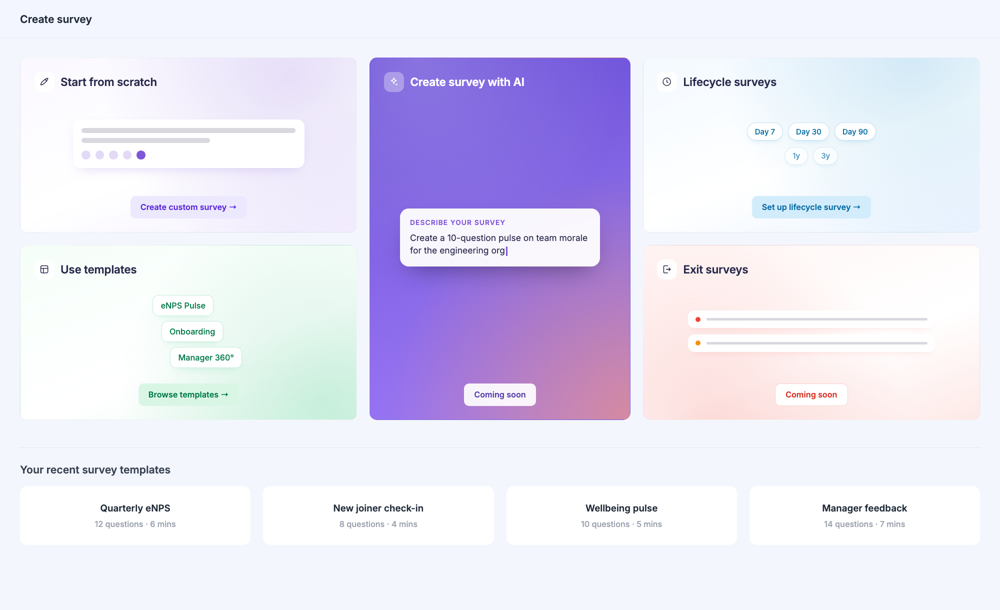
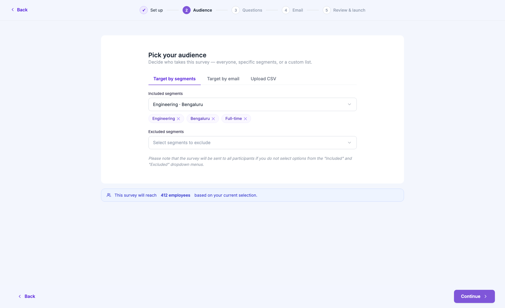
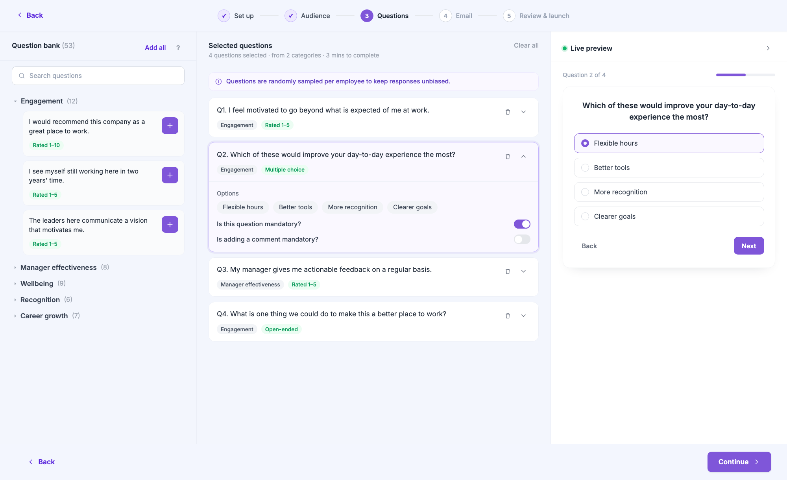
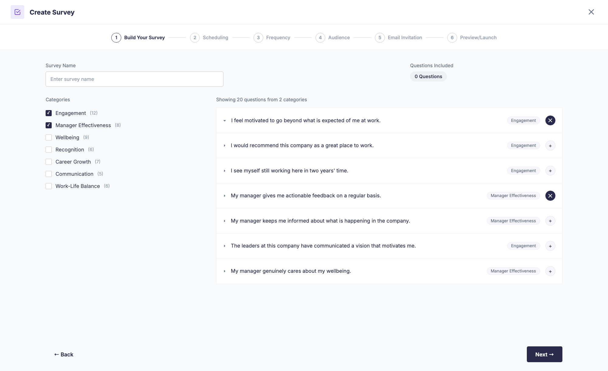
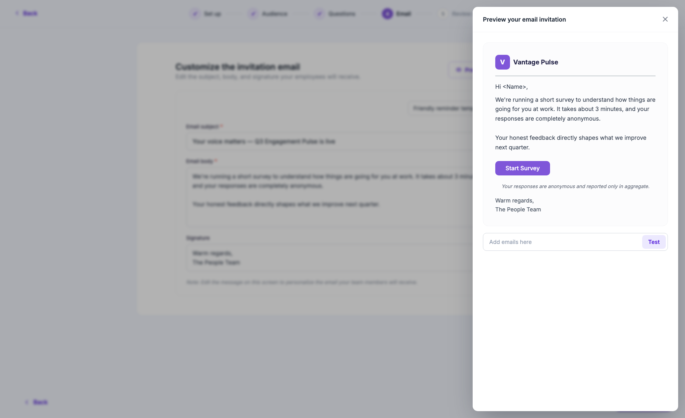
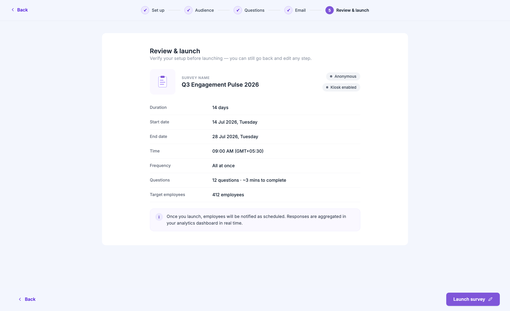

Make creating a survey feel as considered as taking one.
We'd spent months polishing the survey-taking experience for employees. But the admin who creates the survey was still fighting a cramped, six-step wizard trapped inside a dialog. The brief I set myself: rebuild the full flow on our design system, cut the ceremony, and let admins see what they're building while they build it.
"The person creating the survey is a user too. They'd just never been treated like one."
A six-step wizard that shouted at you.
I audited the old flow screen by screen, and the problems stacked up fast:
- Trapped in a dialog - the whole journey lived inside a modal with its own header, close button and scroll areas. A six-step task deserved a page, not a popup.
- SCHEDULING. FREQUENCY. AUDIENCE. - headings in all caps, followed by dense justified paragraphs explaining what a word like "scheduling" means. The UI was shouting and over-explaining at the same time.
- Blind building - you picked questions from an accordion list and never saw what employees would actually experience. The first real look at your survey was after launch.
- Three different button systems on one journey - legacy dashboard buttons, old component buttons and new design-system buttons, each with its own shape and behaviour.
- Nothing was saved - close the dialog at step five and everything was gone. No drafts, no recovery, no mercy.
- Washed-lavender cards, 4px corners, fixed 770px widths - visual decisions from three different eras sharing one screen.
None of these were bugs. Every screen "worked". That's exactly why it never got fixed - it was uncomfortable everywhere but broken nowhere.
Four rules before any pixels.
Instead of restyling six screens, I set rules for the whole journey and let the screens fall out of them:
- A page, not a popup. The flow gets the full viewport - a tinted surface, a frosted-glass header with the stepper, and content that scrolls underneath it.
- Five steps, honestly named. Scheduling and frequency aren't separate ideas - they're both "when". Merging them into Set up turned six steps into five: Set up → Audience → Questions → Email → Review & launch.
- Show, don't explain. Every paragraph that explained what a step meant was replaced by a design that makes it obvious - and a live preview that shows the result.
- One design language. Every colour, radius, shadow and button comes from the design system. Zero hardcoded values, one button family, sentence case everywhere.
A home worth arriving at.
The journey now starts on a bento-style home page instead of a menu. Each way of creating a survey - from scratch, from templates, with AI, lifecycle, exit - is a card with its own personality and a tiny animated vignette of what it does. Hover on "start from scratch" and the mock question's answer dots do a little wave.

The bento home: five creation paths, each with its own colour story, plus your recent templates one scroll below.
Three questions, one screen, zero lectures.
What is it called, when does it run, how do questions arrive - the old flow spread this across three steps with a paragraph of theory on each. Now it's one calm screen. The illustration on the right isn't decoration-for-decoration's-sake: it's a quiet preview of the artifact you're creating, and it animates gently while you type.
Frequency options became cards you can compare at a glance - each with its own colour and a one-line consequence ("Everyone gets every question on day one") instead of a definition.
Set up merges the old Scheduling and Frequency steps. The stepper floats in a frosted-glass header; content scrolls beneath it.
Who's taking this? Now with an actual answer.
Segments, email lists and CSV upload were already there - what was missing was feedback. The redesign adds selected segments as removable chips and, crucially, a live count: "This survey will reach 412 employees." Before, you found out your audience size after launch. If the audience drops below the anonymity threshold, a warning appears right there - not in a support ticket later.

The count banner turns an invisible consequence into a visible one, at the exact moment you can still change your mind.
The builder became a workspace.


From a checkbox-and-accordion list to a three-panel workspace: browse the bank on the left, curate your set in the middle, and watch the survey render live on the right.
You see what employees will see - while you're still deciding.
This screen carried the whole redesign's thesis. The old builder made you assemble a survey through checkboxes and trust that it would come out fine. The new one is a workspace:
- Question bank - searchable, grouped by category, with the question type (Rated 1-5, Multiple choice, Open-ended) visible on every card. One tap adds it.
- Selected questions - your actual survey, reorderable and expandable. Open a question to see its answer options, set it as mandatory, or require a comment. A running estimate ("4 questions · 3 mins to complete") keeps survey fatigue visible, and a warning appears if it gets too long.
- Live preview - a pixel-accurate rendition of the employee experience, updating as you build. It's collapsible, but it nudges you when it has something new to show.
First-time users get two small coach marks - one pointing at categories, one at the preview - and then the interface gets out of the way.
Write the invite; preview it like an inbox.
The old email step crammed editing and preview into one dark, split screen. Now editing gets the room, and the preview slides in as a drawer styled like a real email client - logo, greeting, body, the actual "Start Survey" button. You can send a test to yourself before committing 412 inboxes to it.

The preview drawer renders the invitation exactly as employees receive it - including the anonymity disclaimer.
A boarding pass, not a form.
The last step reads like a summary you'd actually check: name, duration, dates, frequency, question count, audience size - one fact per row. A quiet info banner sets expectations for what happens after launch. And when you do launch, the confirmation celebrates inline with a small animation, instead of tossing you into a different page mid-moment.

Everything you chose, verifiable at a glance - with a purple "Launch survey" as the only loud element on the page.
The details you feel more than see.
- Frosted-glass chrome - the stepper header and the action footer blur the content scrolling beneath them, so the flow feels like one continuous surface instead of stacked bars.
- Staggered entrances - every step fades its content up in a gentle 200ms cascade. Nothing pops; everything settles.
- Drafts, finally - the flow autosaves as you go, and your three latest drafts wait on the home page. Closing the tab is no longer a catastrophe.
- Zero hardcoded values - every colour, radius, spacing and shadow resolves to a design-system token. The flow ships with a lint gate that keeps it that way.
- Sentence case, everywhere - "Review & launch", not "PREVIEW/LAUNCH". Small change, completely different tone of voice.
Less ceremony, more confidence.
The flow went from something admins endured to something they can move through in a couple of minutes - seeing exactly what they're about to send at every step.
The quieter win: the audience count, fatigue estimate and anonymity warning surface consequences before launch - the moments that used to generate support tickets now resolve themselves inside the flow.